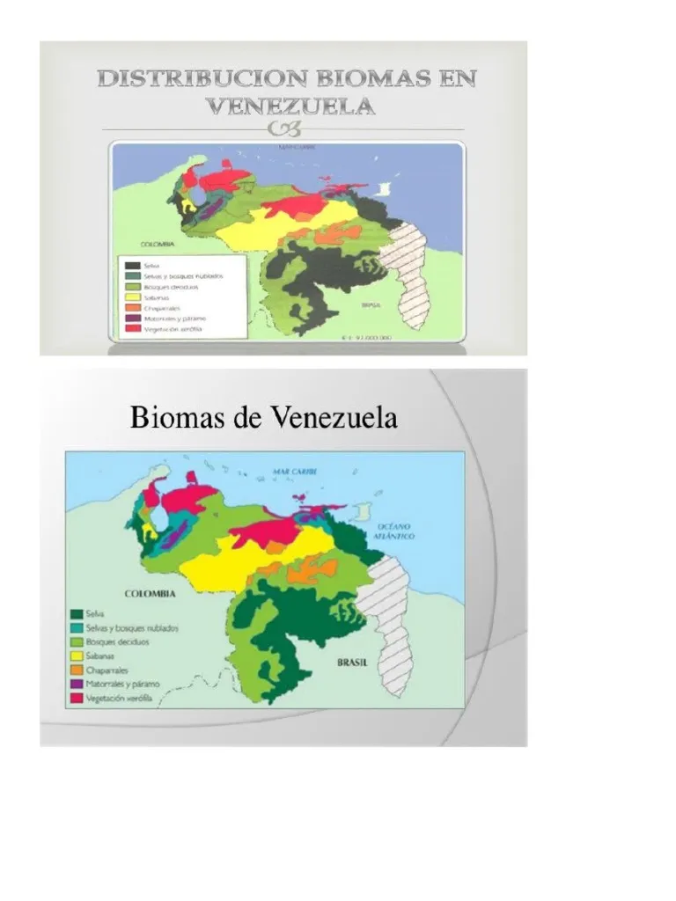
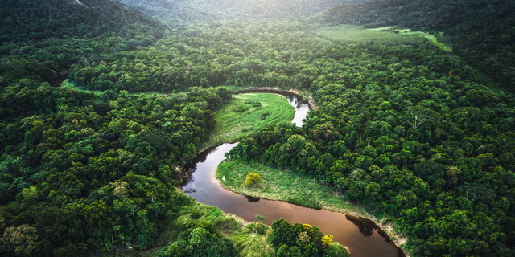
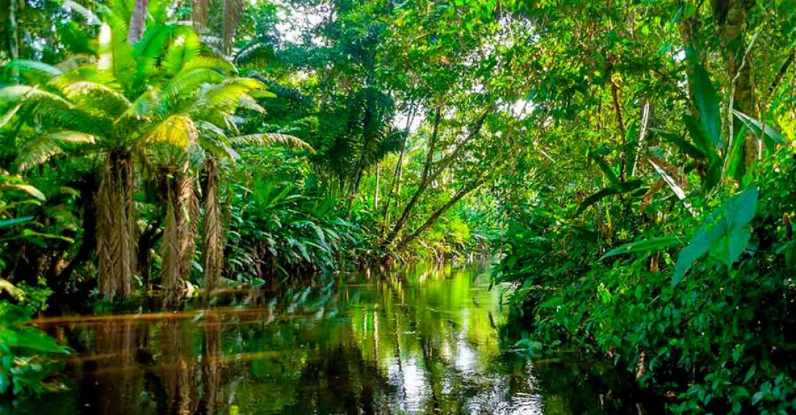
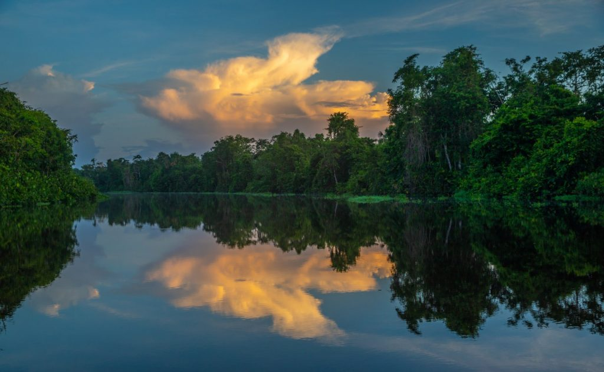
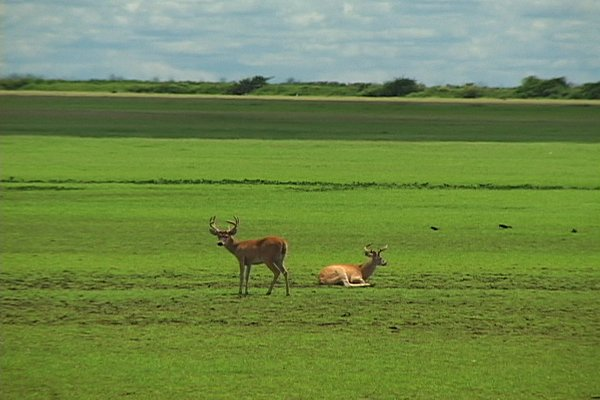
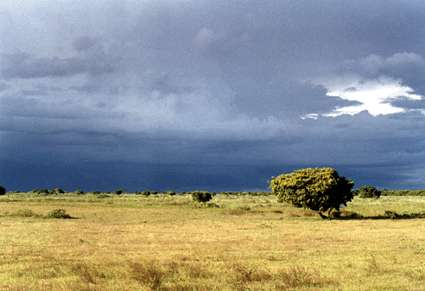
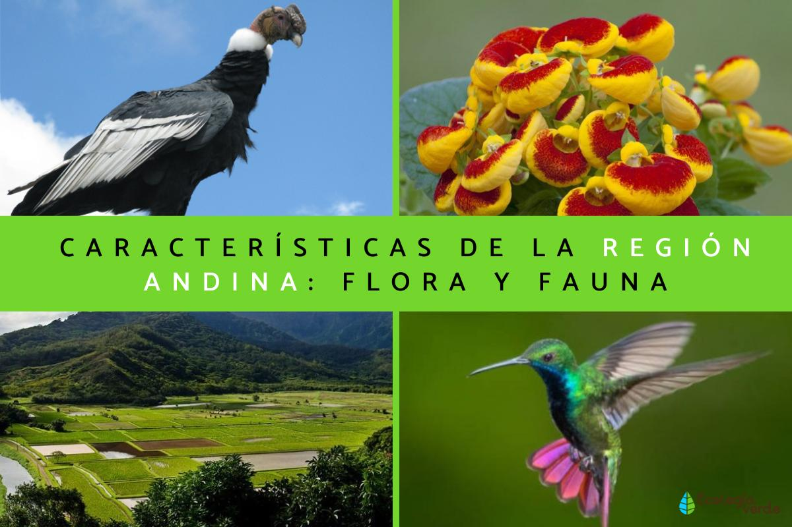
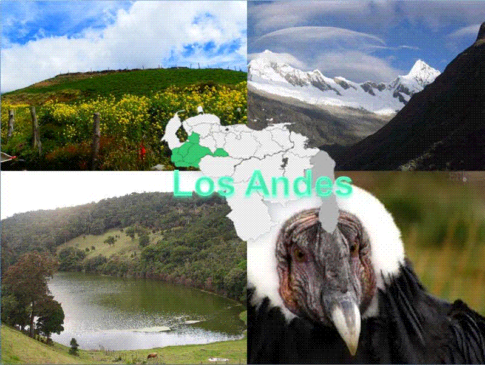
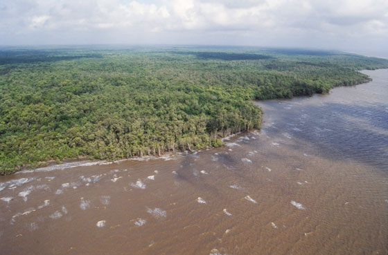
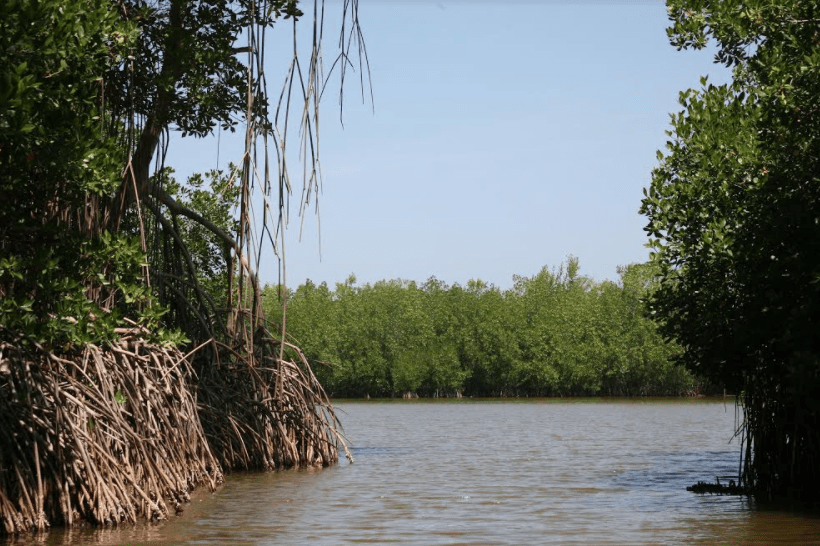

🌎 Venezuela: Un País Megadiverso
Venezuela es uno de los 17 países megadiversos del planeta, albergando aproximadamente el 8% de todas las especies conocidas en solo el 0.2% de la superficie terrestre. Esta extraordinaria biodiversidad se debe a la combinación de múltiples factores: su ubicación en la zona intertropical con abundante radiación solar, su variedad de relieves que van desde el nivel del mar hasta picos de casi 5,000 metros, su proximidad al Caribe y su conexión con la cuenca amazónica, la mayor reserva de biodiversidad del mundo.
El país cuenta con 9 ecorregiones terrestres reconocidas internacionalmente por WWF y The Nature Conservancy, cada una con condiciones climáticas, suelos, hidrología y comunidades biológicas únicas. Además, posee ecosistemas marino-costeros de extraordinaria importancia como arrecifes de coral, praderas de fanerógamas marinas y manglares. A continuación exploramos los principales biomas que definen el paisaje y la identidad ecológica venezolana.
🎯 Objetivos de Aprendizaje
Al finalizar este tema serás capaz de: identificar los principales biomas de Venezuela y su ubicación geográfica, describir las características climáticas, edáficas y biológicas de cada bioma, reconocer la flora y fauna emblemática de cada ecosistema, comprender las amenazas que enfrentan los biomas venezolanos, y valorar la importancia de las áreas protegidas para la conservación.
🗺️ Distribución de los Biomas
La distribución de los biomas en Venezuela está determinada principalmente por el gradiente altitudinal (de los Andes al Caribe), el gradiente pluviométrico (de la Amazonía húmeda a la costa árida) y la estacionalidad (marcada en los Llanos). Esto crea un mosaico de ecosistemas únicos en poco espacio geográfico.

Figura 1: Distribución de biomas en Venezuela. Fuente: Scribd.
🌿 Selva Amazónica (Bosque Húmedo Tropical)

La Mayor Reserva de Biodiversidad
La selva amazónica venezolana ocupa aproximadamente el 45% del territorio nacional, extendiéndose por los estados Amazonas, Bolívar y Delta Amacuro. Es parte del mayor bosque tropical del mundo, que abarca nueve países sudamericanos y contiene la mayor concentración de vida en la Tierra.
- Clima: Tropical húmedo, temperaturas 24-28°C durante todo el año, precipitación >2,000 mm/año distribuida sin estación seca marcada.
- Suelo: Poco fértil (latosoles rojos), nutrientes almacenados en la biomasa vegetal, descomposición rápida de materia orgánica.
- Estratos: Emergente (40-50 m), dosel (20-30 m), sotobosque (5-10 m), herbáceo (<1 m).
- Flora: Ceiba, araguaney, chaguaramo, palmas (moriche, maquenque), orquídeas, bromelias, helechos arbóreos.
- Fauna: Jaguar, danta (tapir), guacamaya azul y amarilla (Ara ararauna), anaconda verde, caimán del Orinoco, mono araña rojo (Ateles paniscus), perezoso de tres dedos, delfín rosado del Amazonas.


Figura 2: Interior de la selva amazónica (izquierda) y Delta del Orinoco (derecha). Fuentes: Árbol Invertido / Osprey Expeditions.
¿Sabías que...?
Un solo hectárea de selva amazónica venezolana puede contener más especies de árboles que toda Europa del Norte. La Reserva de Biosfera Alto Orinoco-Casiquiare, declarada por la UNESCO, es una de las zonas más biodiversas del planeta. Además, el 20% del oxígeno producido en la Tierra proviene de la Amazonía.
🌾 Los Llanos (Sabana Inundada)

La Sabana Más Grande de América del Sur
Los Llanos venezolanos abarcan aproximadamente 300,000 km² (un tercio del país), extendiéndose por los estados Apure, Barinas, Portuguesa, Cojedes, Guárico y Anzoátegui. Es una extensa planicie de sabana con marcada estacionalidad que define toda su ecología y cultura.
- Clima: Tropical de sabana (Aw), estación seca pronunciada (noviembre-abril) y estación lluviosa (mayo-octubre). Temperaturas 25-30°C.
- Suelo: Acrisoles y lixisoles, bien drenados, ácidos, baja fertilidad natural que requiere quema controlada para pastoreo.
- Flora: Mata de moriche (Mauritia flexuosa), samán (Albizia saman), apamate (Tabebuia rosea), trupillo (Prosopis juliflora), chaparro (Curatella americana), cardón (Stenocereus griseus). Gramíneas dominantes en época seca.
- Fauna: Capybara o chigüire (Hydrochoerus hydrochaeris), caimán del Orinoco (Crocodylus intermedius), anaconda verde (Eunectes murinus), venado caramerudo (Odocoileus virginianus), garzas, ibis, jabirú (Jabiru mycteria), águila harpía (en zonas boscosas de galería).

Figura 3: Sabanas llaneras en época de sequía. Fuente: Venezuela Tuya.
💧 El Pulso de los Llanos: Un Ecosistema de Dos Caras
Durante la estación lluviosa, los llanos se inundan hasta convertirse en un "mar de hierba" donde el agua puede alcanzar 1-2 metros de profundidad, creando un ecosistema acuático temporal. En la estación seca, el agua se retrae a los ríos y esteros (lagunas temporales), concentrando la fauna y creando espectáculos de observación sin igual. Este ciclo de inundación anual define toda la ecología, la cultura y la economía del bioma.
¿Sabías que...?
El chigüire o capybara es el roedor más grande del mundo, puede pesar hasta 65 kg y es semiacuático. En los Llanos, los chigüires se congregan en grupos de cientos durante la sequía. Los llaneros tradicionalmente los cazan, pero también los protegen como parte de su cultura.
🏔️ Cordillera de los Andes

De los Páramos a los Bosques Nublados
La cordillera andina venezolana se extiende por los estados Mérida, Táchira, Trujillo y Barinas, alcanzando el Pico Bolívar (4,978 m), el punto más alto del país. Presenta una diversidad de pisos altitudinales con vegetación y fauna distinta en cada uno, creando un "museo de ecosistemas" en pocos kilómetros.
- Clima: Varía drásticamente con la altitud: templado (800-2,000 m), frío (2,000-3,000 m), páramo (>3,000 m), nieve perpetua en glaciares (>4,700 m). Precipitación 1,000-2,500 mm/año.
- Pisos altitudinales: Bosque húmedo premontano → bosque nublado montano → bosque de coníferas andinas → páramo (matorral de frailejones) → superpáramo → nieve perpetua (glaciares).
- Flora: Frailejón (Espeletia spp.), pino andino (Pinus tropicalis), coloradito (Clusia multiflora), orquídeas (Oncidium, Epidendrum), bromelias gigantes (Puya), frailejón de la Laguna Mucubají.
- Fauna: Cóndor andino (Vultur gryphus), oso de anteojos (Tremarctos ornatus), puma (Puma concolor), venado de cola blanca (Odocoileus virginianus), colibríes (más de 100 especies, incluyendo el colibrí abeja), ranas arborícolas (Hylidae), lagartija andina.

Figura 4: Ecorregiones andinas venezolanas. Fuente: Ecorregiones de Venezuela.
¿Sabías que...?
El páramo andino es conocido como la "fábrica de agua" de Venezuela. Los frailejones actúan como esponjas vegetales que capturan la neblina y liberan agua lentamente, alimentando ríos que abastecen a millones de personas en el occidente del país. Un frailejón puede vivir 100 años y crecer solo 1 cm al año. Venezuela tenía 6 glaciares en los Andes; hoy solo quedan fragmentos en el Pico Bolívar y Humboldt debido al calentamiento global.
🌊 Delta del Orinoco y Manglares

El Delta Más Grande de América del Sur
El Delta del Orinoco ocupa aproximadamente 40,000 km² en el estado Delta Amacuro. Es un complejo sistema de ríos, caños, islas fluviales, pantanos y esteros formado por los sedimentos del Orinoco durante miles de años. Es el delta más grande de Sudamérica y uno de los más importantes del mundo por su biodiversidad.
- Clima: Tropical húmedo de manglar, temperaturas 26-28°C, precipitación >2,500 mm/año, alta humedad relativa.
- Suelo: Sedimentos aluviales recientes, muy fértiles pero anaeróbicos (bajo oxígeno), con alta materia orgánica.
- Flora: Mangle rojo (Rhizophora mangle), mangle negro (Avicennia germinans), mangle blanco (Laguncularia racemosa), palma de moriche (Mauritia flexuosa), yagua (Maximiliana maripa).
- Fauna: Delfín del Orinoco o bufeo (Inia geoffrensis), manatí (Trichechus manatus), caimán del Orinoco, tortuga arrau (Podocnemis expansa), garzas, ibis escarlata (Eudocimus ruber), ariranha o nutria gigante (Pteronura brasiliensis), chiguire.

Figura 5: Ecosistema de manglar en Venezuela (izquierda) y paisaje del Delta del Orinoco (derecha). Fuentes: Ecología Política / Osprey Expeditions.
🌱 Los Manglares: Guardianes de la Costa
Los manglares son bosques costeros que crecen en la interfaz tierra-mar. Sus raíces aéreas (neumatóforos y zancos) les permiten respirar en suelos permanentemente anegados y salinos. Funciones vitales: protegen la costa de huracanes, erosión y marejadas ciclónicas; son viveros naturales de peces (el 75% de las especies marinas comerciales dependen de manglares en alguna etapa de su vida); y secuestran 5 veces más carbono por hectárea que los bosques terrestres, siendo cruciales contra el cambio climático. Venezuela posee aproximadamente 7,000 km² de manglares, uno de los mayores complejos del Caribe.
🌵 Otros Biomas Importantes
Bosque Seco Tropical (Costa Norte y Península de Paraguaná)
Ubicado en la costa norte de Venezuela, desde Falcón hasta Anzoátegui, y en la Península de Paraguaná. Recibe entre 500 y 1,200 mm de lluvia al año con una estación seca de 5-7 meses. Vegetación de árboles espinosos y cactus columnares como el cardón. Fauna adaptada a la aridez: ardillas, iguanas, culebras, zorros, y aves como el perico cara sucia.
Bosque Nublado (Cordillera de la Costa y Turimiquire)
Se encuentra en las montañas costeras de Aragua, Carabobo, Miranda y el macizo de Turimiquire (Sucre-Monagas). Se caracteriza por la presencia constante de neblina que satura la vegetación. Temperaturas 15-22°C, precipitación 1,500-3,000 mm/año. Flora: helechos arbóreos, bromelias, orquídeas, palmas, árboles de niebla. Fauna: mono araña, puma, osos hormigueros, quetzales (trogonidae), cotorras.
Arrecifes de Coral y Praderas Marinas (Costas e Islas)
Los arrecifes coralinos venezolanos se extienden en el Caribe (Los Roques, Morrocoy, Mochima) y el Atlántico (Archipiélago de Los Testigos). Son ecosistemas de alta biodiversidad marina. Las praderas de fanerógamas marinas (Thalassia testudinum) en los fondos arenosos son el "pasto del mar", alimentando a tortugas verdes, manatíes y peces herbívoros.
📊 Comparativa de los Principales Biomas
| Bioma | Extensión (~km²) | Precipitación | Amenazas Principales |
|---|---|---|---|
| Selva Amazónica | ~450,000 | >2,000 mm/año | Minería ilegal (Arco Minero), deforestación, carreteras, cacería furtiva |
| Llanos | ~300,000 | 1,200-2,000 mm/año | Ganadería extensiva, agricultura de soya, sequías extremas por El Niño |
| Andes | ~35,000 | 1,000-2,500 mm/año | Cambio climático (deshielo), agricultura de ladera, urbanización, incendios |
| Delta/Manglares | ~40,000 | >2,500 mm/año | Contaminación petrolera, deforestación de manglar, dragado, pesca ilegal |
| Bosque Seco Tropical | ~25,000 | 500-1,200 mm/año | Tala para carbón vegetal, agricultura, urbanización costera, turismo descontrolado |
| Bosque Nublado | ~15,000 | 1,500-3,000 mm/año | Tala, cambio de uso del suelo, turismo descontrolado, incendios |
🛡️ Conservación y Desafíos
Venezuela fue pionera en conservación ambiental en América Latina: creó el Parque Nacional Canaima (1962), declarado Patrimonio de la Humanidad por la UNESCO en 1994, y el Parque Nacional Henri Pittier (1937), el primero de toda América Latina. El país llegó a tener más del 50% de su territorio bajo alguna figura de protección, una de las proporciones más altas del mundo. Sin embargo, en las últimas décadas los biomas venezolanos enfrentan amenazas crecientes.
🟢 Áreas Protegidas Destacadas
- Parque Nacional Canaima: 30,000 km², tepuyes, Salto Ángel (979 m, cascada más alta del mundo), ríos de agua negra.
- Reserva de Biosfera Alto Orinoco-Casiquiare: 83,000 km², selva virgen, pueblos indígenas Yanomami.
- Parque Nacional Morrocoy: Arrecifes de coral, manglares, cayos, aves migratorias.
- Parque Nacional Mochima: Selva seca costera, arrecifes, playas, bosque xerófilo.
- Parque Nacional Sierra Nevada: Páramos, bosques nublados, glaciares, lagunas.
- Monumento Natural Laguna de los Patos: Hábitat de flamencos y otras aves acuáticas.
🔴 Amenazas Actuales
- Minería ilegal: El Arco Minero del Orinoco (decreto 2016) afecta 112,000 km² de selva amazónica con minería de oro, diamantes y coltán.
- Deforestación: Pérdida de ~150,000 hectáreas/año en la Amazonía venezolana, según monitoreos satelitales.
- Cambio climático: Deshielo acelerado de glaciares andinos, alteración de patrones de lluvia, sequías más intensas.
- Contaminación petrolera: Derrames recurrentes en el Lago de Maracaibo, delta del Orinoco y costas del Caribe.
- Falta de gestión: Reducción drástica de presupuesto para guardaparques, investigación y control.
- Cacería furtiva: Tráfico de fauna silvestre (guacamayas, monos, reptiles) para mercados internacionales.
¿Sabías que...?
El tepuy Roraima, en la triple frontera Venezuela-Brasil-Guyana, inspiró la novela El Mundo Perdido (1912) de Arthur Conan Doyle. Estas mesetas de arenisca tienen ecosistemas únicos con especies endémicas que no existen en ningún otro lugar del planeta, como la rañita de cristal (Hyalinobatrachium), ranas con piel transparente, y plantas carnívoras adaptadas a suelos empobrecidos. El aislamiento geográfico de los tepuyes durante millones de años ha creado verdaderos "laboratorios de evolución".